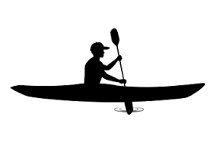
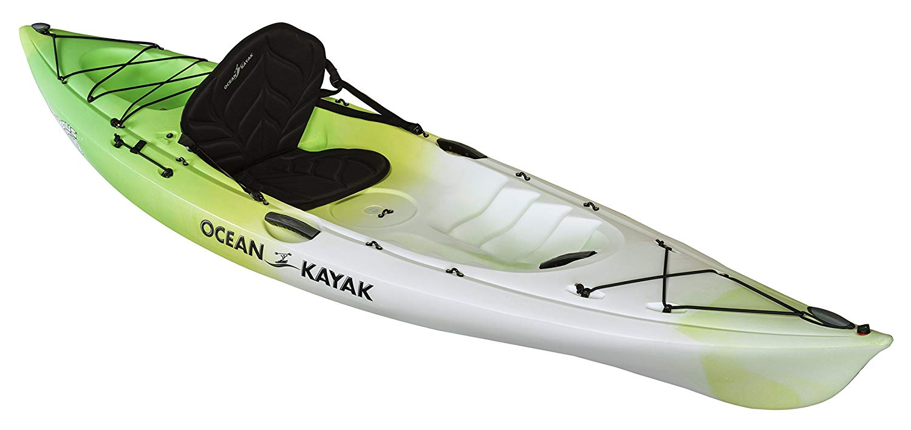

Types of Kayaks
Sit in Kayaks
You have more options with a sit-in. You can use them in warm weather, but you can also attach a spray skirt and use them in colder, rougher water. You’ll stay drier with a sit-in and they often have more storage and offer more options to store belongings and keep them from getting wet as well. They frequently are constructed with foot braces inside so that you can brace your legs for a more efficient stroke and to get more power from your stroke. Contrary to what some may think, sit-in kayaks are actually quite roomy, rather than confined.
Sit-On-Top Kayaks
A sit-on-top kayak has a molded-in depression on top that gives you a place to sit. They are versatile and can be used for a recreational day on the water. They are a great option for anyone, including a beginner who is learning the ins and outs of kayaking. They may also be a good choice for someone who is tall, has long legs or is large framed (always check weight capacity specifications when buying). You will get splashed and get wet, so they tend to be best for warm days and warm water. They are reasonably easy to get in and out of, which is great if you plan to swim or are boating with kids or dogs.
Advantages/Disadvantages
Powered by w3.css